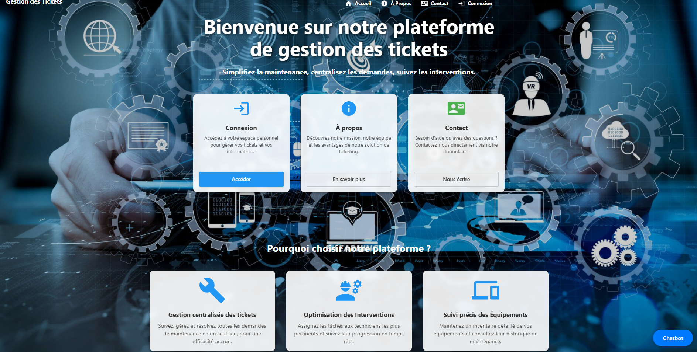
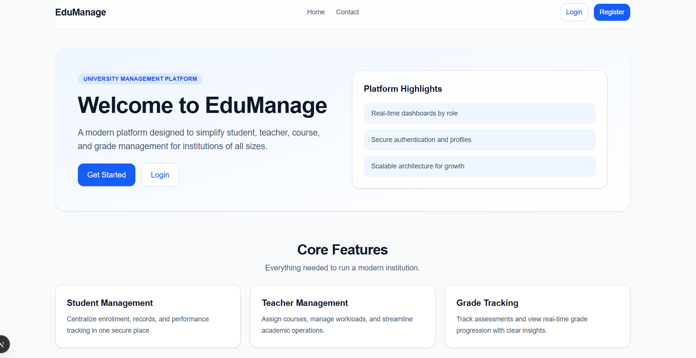
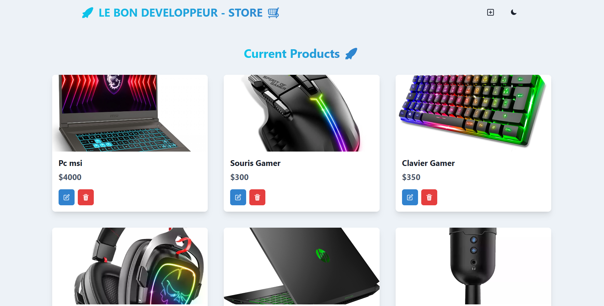

01 / 07
SCROLL TO EXPLORE01 — Selected work2024 — 2026
Things made
to matter.
A selection of products built with care, curiosity, and an eye for the details that make software feel right.
IT Maintenance
Ticketing platform · Web & Mobile
A maintenance request platform to create, track, and manage IT intervention tickets.

EduManage
University management · Web app
A single place to manage students, teachers, classes, courses, and departments.

Le Bon Développeur-Store
E-commerce · DevOps
An e-commerce application, developed and deployed with a CI/CD delivery pipeline.

+ Interfaces that solve real problems, built end to end.
02 — A little about me36°27′ N 10°44′ E
Curious by nature. Developer by choice.
I build for the
whole picture.
I’m Abdelkader, a developer who enjoys connecting the dots between a clear interface and the systems running behind it.
From shaping an idea into a useful product to getting it deployed and running reliably, I like being part of every step. I’m currently growing my craft through hands-on work, thoughtful collaboration, and a healthy curiosity for what’s next.
Experience — 2B-INFOSYS, La Marsa
Web Development Intern
Designed and developed a web platform for IT equipment maintenance as a final-year degree project. Built the interface with React and the backend with Express.js and MongoDB.
Tools I work with
03 — In the margins
Notes from
the process.
04 — Have a good one in mind?Open to what’s next